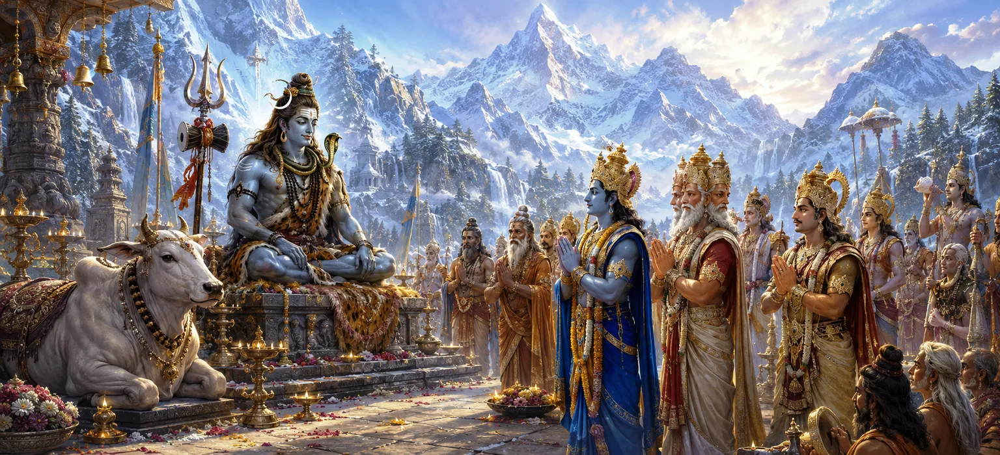

As the sacred wedding of Lord Shiva and Goddess Pārvatī approached, Mount Kailāsa became the center of divine activity. Gods, sages, celestial musicians, and heavenly beings journeyed from every realm to witness the auspicious event. The entire universe seemed filled with anticipation as preparations advanced for the most glorious marriage in creation.
One after another, celestial beings arrived at Kailāsa. The heavens sent their finest representatives, each eager to participate in the celebration of the union between Shiva and Shakti.
Brahmā, Viṣṇu, Indra, and many other deities gathered with reverence. They understood the cosmic significance of the marriage and rejoiced that the long-awaited union was finally approaching.
The sacred mountain shone with extraordinary beauty. Celestial flowers, divine fragrances, and auspicious sounds filled the atmosphere, transforming Kailāsa into a realm of celebration.
Nandi, the gaṇas, and Shiva’s attendants celebrated with enthusiasm. Having witnessed their Lord's long journey toward this divine union, they rejoiced at the approaching wedding.
Great sages arrived to bless the wedding and witness a moment destined to shape the future of the worlds. Their presence added sacred authority to the gathering.
As the gathering grew larger, excitement spread throughout Kailāsa. Everyone eagerly awaited the moment when Lord Shiva would begin his magnificent wedding procession.
The highest beings unite in service of a sacred purpose.
All gods honor the divine union of Shiva and Shakti.
The entire universe rejoices when dharma is fulfilled.
The gathering at Kailāsa was not merely a celebration. It symbolized the harmony of divine powers and the unity of creation. Every realm recognized that the marriage of Shiva and Pārvatī would bring immense blessings to the worlds.
When noble and sacred purposes are pursued, support naturally arises from every direction. Just as the gods gathered at Kailāsa, righteous endeavors attract blessings, cooperation, and divine grace.
Gandharvas sang celestial melodies while heavenly musicians played divine instruments. Joyous sounds echoed throughout the sacred mountain as everyone prepared for the wedding festivities.
As the auspicious hour approached, all eyes turned toward Lord Shiva. The assembled gods eagerly awaited the beginning of the magnificent wedding procession that would soon depart for Himālaya.
"When the Divine prepares to bless the worlds, even heaven gathers in celebration."
The gods, sages, and celestial beings have assembled at Mount Kailāsa, filling the sacred abode of Lord Shiva with joy and anticipation. With all preparations nearing completion, the moment has arrived for the divine bridegroom to begin his journey. Continue to the next chapter to witness Shiva’s magnificent wedding procession as it sets forth toward Himālaya.